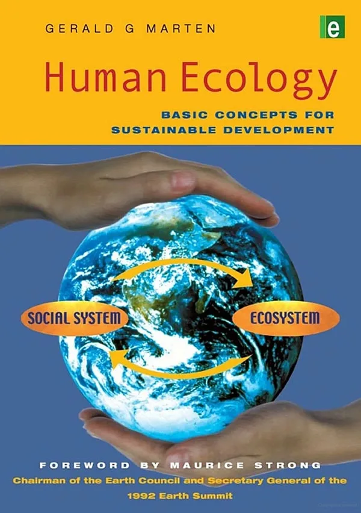

Human Ecology
Basic Concepts for Sustainable Development
Author: Gerald G. Marten
Publisher: Earthscan Publications
Publication Date: November 2001, 256 pp.
Paperback ISBN: 1853837148
Hardback SBN: 185383713X
Further Reading
- Anderson, E (1996) Ecologies of the Heart: Emotion, Belief, and the Environment, Oxford University Press, Oxford
- Borden, R, Jacobs, J and Young, G (eds) (1986) Human Ecology: A Gathering of Perspectives, Society for Human Ecology, College Park, Maryland
- Borden, R, Jacobs, J and Young, G (eds) (1988) Human Ecology: Research and Applications, Society for Human Ecology, College Park, Maryland
- Botkin, D and Keller, E (1999) Environmental Science: Earth as a Living Planet, Wiley, New York
- Boyden, S (1987) Western Civilization in Biological Perspective: Patterns in Biohistory, Clarendon, Oxford
- Brown, L R, Flavin, C and French, H (2001) State of the World 2001: A Worldwatch Institute Report on Progress Toward a Sustainable Society, Earthscan, London
- Brown, L R, Flavin, C, French, H, Postel, S and Starke, L (2000) State of the World 2000: A Worldwatch Institute Report on Progress Toward a Sustainable Society, Earthscan, London
- Brown, L R, Flavin, C, French, H, and Starke, L (1999) State of the World 1999: A Worldwatch Institute Report on Progress Toward a Sustainable Society, Earthscan, London
- Bunyard, P (1996) Gaia in Action: Science of the Living Earth, Floris Books, Edinburgh
- Campbell, G (1995) Human Ecology: The Story of our Place in Nature from Prehistory to Present, Aldine, Hawthorne
- Clayton, A, and Radcliffe, N (1996) Sustainability: A Systems Approach, Earthscan, London
- Cohen, J (1995) How Many People can the Earth Support?, WW Norton, New York
- Daily, G (1997) Nature’s Services: Societal Dependence on Ecosystems, Island Press, Washington, DC
- Diamond, J (1997) Guns, Germs, and Steel: The Fates of Human Societies, WW Norton, New York
- Drury, W and Anderson, J (1998) Chance and Change: Ecology for Conservationists, University of California Press, Berkeley
- Ehrlich, P, Ehrlich, A and Holdren, J (1973) Human Ecology: Problems and Solutions, W H Freeman, San Francisco
- Foreman, R (1995) Land Mosaics: The Ecology of Landscapes and Regions, Cambridge University Press, Cambridge
- Gliessman, S (1997) Agroecology: Ecological Processes in Sustainable Agriculture, Lewis Publishers, Boca Raton
- Gunderson, L, Holling, C and Light, S (1995) Barriers and Bridges to Renewal of Ecosystems and Institutions, Columbia University Press, New York
- Hardin, G (1993) Living within Limits: Ecology, Economics and Population Taboos, Oxford University Press, Oxford
- Hawken, P, Lovins, A B and Lovins L (1999) Natural Capitalism: Creating the Next Industrial Revolution, Earthscan, London
- Hawley, A (1950) Human Ecology: A Theory of Community Structure, Ronald, New York
- Hens, L, Borden, R and Suzuki, S (1999) Research in Human Ecology: An Interdisciplinary Overview, Vu University Press, Amsterdam
- Holling, C (1978) Adaptive Resource Management and Assessment, Wiley-Interscience, New York
- Homer-Dixon, T (1999) Environment, Scarcity, and Violence, Princeton University Press, Princeton
- Hrdy, S (1999) Mother Nature: A History of Mothers, Infants, and Natural Selection, Pantheon, New York
- Karliner, J (1997) The Corporate Planet: Ecology and Politics in the Age of Globalization, Sierra Club Books, San Francisco
- Kormondy, E and Brown, D (1998) Fundamentals of Human Ecology, Prentice-Hall, New York
- Lee, K (1993) Compass and Gyroscope, Island Press, Washington, DC
- Levin, S (1999) Fragile Dominion: Complexity and the Commons, Perseus, Reading, Massachusetts
- Lewin, R (1992) Complexity: Life at the Edge of Chaos, Macmillan, New York
- Lovelock, J (1979) Gaia: A New Look at Life on Earth, Oxford University Press, Oxford
- Marten, G (1986) Traditional Agriculture in Southeast Asia: A Human Ecology Perspective, Westview, Boulder, Colorado
- McHarg, I (1995) Design with Nature, Wiley, New York
- Meadows, D, Meadows, D and Randers, J (1993) Beyond the Limits: Confronting Global Collapse, Envisioning a Sustainable Future, Chelsea Green, Post Mills, Vermont
- Miller, G (1998) Environmental Science: Working with the Earth, Wadsworth, Belmont, California
- Moran, E (1982) Human Adaptability: An Introduction to Ecological Anthropology, Westview, Boulder, Colorado
- Nebel, B and Wright R (1999) Environmental Science: The Way the World Works, Prentice-Hall, New York
- Norgaard, R (1994) Development Betrayed: The End of Progress and a Coevolutionary Revisioning of the Future, Routledge, New York
- Ostrom, E (1990) Governing the Commons: The Evolution of Institutions for Collective Action, Cambridge University Press, Cambridge
- Rambo, A and Sajise, T (1985) An Introduction to Human Ecology Research on Agricultural Systems in Southeast Asia, University of the Philippines, Los Banos, Philippines
- Rees, W, Testemale, P and Wackernagel, M (1995) Our Ecological Footprint: Reducing Human Impact on the Earth, New Society Publishers, Gabriola Island, British Columbia
- Roseland, M (1997) Eco-City Dimension: Healthy Communities, Healthy Planet, New Society Publishers, Gabriola Island, British Columbia
- Soule, F and Piper, J (1992) Farming in Nature’s Image: An Ecological Approach to Agriculture, Island Press, Washington, DC
- Spirn, A (1999) Language of Landscape, Yale University Press, New Haven
- Steele, J (1997) Sustainable Architecture: Principles, Paradigms, and Case Studies, McGraw-Hill, New York
- Suzuki, S, Borden, R and Hens, L (eds) (1991) Human Ecology - Coming of Age: An International Overview, VUB Press, Brussels
- Tainter, J (1990) Collapse of Complex Societies, Cambridge University Press, Cambridge
- Trefil, J (1994) A Scientist in the City, Doubleday, New York
- Troxel, J (1994) Participation Works: Business Examples from Around the World, Miles Rivers Press, Alexandria, Virginia
- United Nations Development Programme, United Nations Environment Programme, World Bank and World Resources Institute (2000) People and Ecosystems: The Fraying Web of Life, Elsevier, New York
- Van der Ryan, S and Cowan, S (1996) Ecological Design, Island Press, Washington, DC
- Watt, K (1973) Principles of Environmental Science, McGraw-Hill, New York
- Watt, K (2000) Encyclopedia of Human Ecology: New Approaches to Understanding Societal Problems, Academic Press, New York
- Wenn, D (1996) Deep Design: Pathways to a Livable Future, Island Press, Washington, DC
- Wilson, E (2000) Sociobiology: The New Synthesis, Harvard University Press, Cambridge
- Weeks, W (1997) Beyond the Ark: Tools for an Ecosystem Approach to Conservation, Island Press, Washington, DC
- World Commission on Environment and Development (1987) Our Common Future, Oxford Paperbacks, Oxford
- World Resources Institute (1997) Frontiers of Sustainability, Island Press, Washington, DC
- Yes! A Journal for Positive Futures, PO Box 10818, Bainbridge Island, Washington 98110, USA